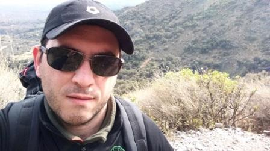

Qué estudié
Estudié en el Instituto Superior de Formación Docente y Técnica Nº57, donde obtuve el título de Analista de Sistemas. Durante mi formación académica, adquirí conocimientos sólidos en programación, bases de datos y gestión de proyectos.
Además, me he mantenido actualizado con las últimas tendencias tecnológicas y he participado en diversos proyectos que me han permitido aplicar mis habilidades en entornos reales.
Mi experiencia laboral se orientó hacia la docencia y la práctica contable, ambas en el ámbito de la administración pública, además de experiencias en el ámbito tecnológico del sector privado.
Actualmente, me desempeño como docente y analista de sistemas, combinando mi pasión por la tecnología con mi vocación por la enseñanza.
Si querés conocer más sobre mi trayectoria profesional y mis proyectos, no dudes en contactarme.
